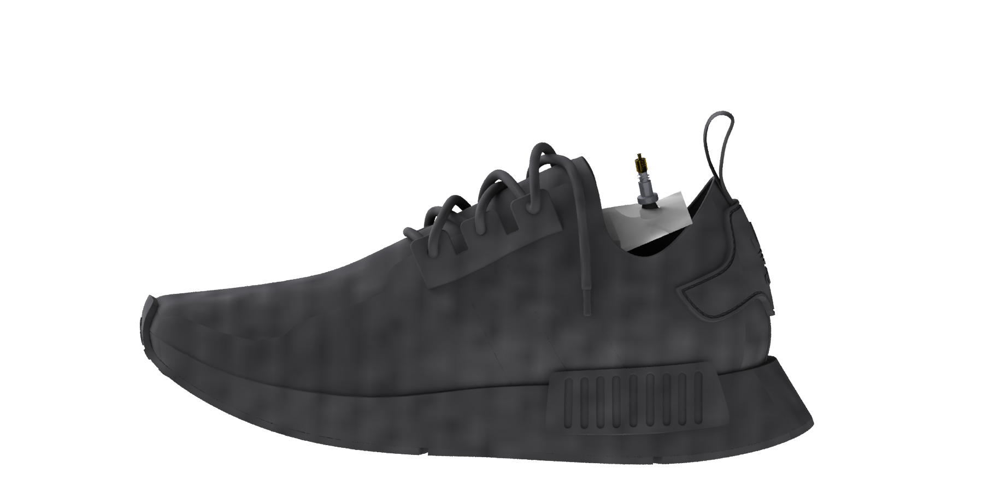

The air pouch is cut to a shape similar but slightly larger than the shoe tongue.
The pouch should be inserted under the shoe tongue and secured using velcro straps.
The installation of the device is intuitive and easy to perform with limited fine motor skills.
Once inflated, the pouch exerts pressure against the tongue and foot.
The handheld pump can be easily pushed into the valve of the tongue pouch and inflate it to a pressure that feels comfortable with the push of a button.
This handheld design lowers the cost and power consumption of the device and increases the portability.
At the same time, it requires minimum fine motor skills to operate.
For those with difficulties bending down, simply lock the handheld pump somewhere stable (eg. wall mount, on shoe rack.)

Currently, the pouch is made using PVC vacuum film and sealed using a heat sealer.
A presta valve is used as connector between the handheld pump and the pouch.
A circular plastic piece is glued beneath the rubber base of the valve onto the inside of the pouch as a method of sealing at this stage.
When the handheld pump is fixed (eg. on shoe rack), an simple mechanism for connecting the pump head and the female valve on the pouch is required.
Currently, we are looking at adding a magnetic ring on top of the male and female valve heads.
Ideally, the user should be able to put their foot towards the pump head to connect the valve heads.
The valve connection should not require the use of hands.
Video of our first prototype testing.
The air pouch is made using PVC vacuum film, cut into a shoe tongue shape of roughly 8.5cm x 13cm.
A 3mm-diameter hole is cut at the top of the pouch to insert a 3mm (outer diameter) tube,
which connects to a presta valve and is sealed with hot glue.
This is a very preliminary prototype, as later on the presta valve shall be directly sealed at the top of the air bag, using either glue or reinforce the valve base seal using rigid plates with rubber o-rings.
With the current hot glue seal, the inflated pouch shows no leakage after user walks around with it.
A bike pump is used to inflate the pouch. When inflated at comfortable pressure, the pouch has approximate thickness of 3cm.
The inflated pouch makes the shoe tightly fitted to user's foot, while being invisible to spectators.
User can walk around with the pouch comfortably. The pouch can be easily with a push on the valve, allowing user to slide their foot out to take off the shoe.